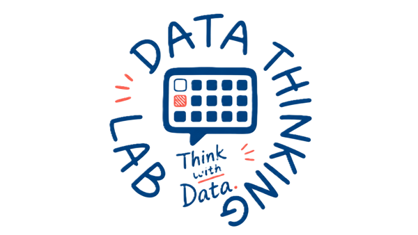

DATA THINKING LAB · COURSE HUB
경기대학교 응용통계전공 2026학년도 2학기 강의 포털입니다. 수강 과목을 선택하면 주차별 강의와 슬라이드로 이동합니다.

SELECT A COURSE
과목별 사이트는 독립적으로 운영됩니다.
EXPLORATORY DATA ANALYSIS
데이터를 관찰하고 시각화하며, 분석 질문을 발견하는 탐색적 사고를 익힙니다.
STATISTICAL CONSULTING
기업의 질문을 데이터로 구체화하고, 분석 근거를 실행 가능한 전략으로 연결합니다.